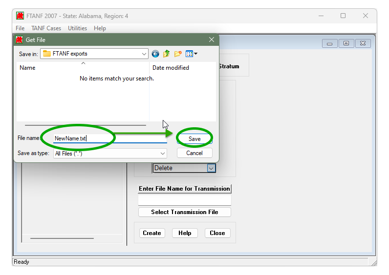

Submitting FRA Data Files to TDP
OFA admins can grant you access to the ‘FRA Data Files’ page where you’ll be able to submit your Work Outcomes of TANF Exiters data, and other future reports relevant to the FRA. If you believe you should have access to FRA Data Files but do not, please reach out to tanfdata@acf.hhs.gov
Jump to:
- Submitting FRA Data Files
- Resubmitting FRA Data Files
- Viewing FRA Submission History
- Understanding FRA Error Reports and File Structure
Submitting FRA Data Files
-
Choose which data you'll be submitting
Fill out the search fields for 'File Type', ‘Fiscal Year (October - September)’ , and ‘Quarter’ to identify which type and reporting period of data you’ll be uploading and click 'Search'. Note that Secondary School Attainment and Supplemental Work Outcomes file types will not be selectable until closer to their first submission date in Fiscal Year 2026.
A new area of the page will appear below the search button.
For the Work Outcomes of TANF Exiters report, the records within your data files are organized by calendar month (YYYYMM), however, these files are submitted according to fiscal quarters and fiscal years; which run from October 1 to September 30. As an example, files that cover Calendar Year 2024 Quarter 4 (October-December) are to be reported for Fiscal Year 2025 Quarter 1. TDP requirements.
-
Upload your files
You can either drag each file or drop the file to the selection or click ‘Choose from folder’ to browse your computer for the file. Acceptable file formats for submission are .csv and .xlsx.

-
Submit your files
After uploading the files you want to submit, click the ‘Submit Report’ button. You'll see a banner appear confirming that TDP has your file.

How to Resubmit Data
If you need to replace or revise any file submitted to TDP, you can do so either by dragging a new file into the section(s) you’d like to resubmit or by clicking ‘Change File’. Once the new file is selected, be sure to click the ‘Submit Report’ button again to save your changes.
TDP always treats the most recently uploaded version of a file as the source of truth for a given reporting period. Make sure that any resubmissions include all data that you're submitting for that reporting period, not just the subset that's changed since your previous submission.
Viewing FRA Submission History
Submission History allows you to access all versions of the data files previously submitted for a given quarter via the TANF Data Portal (TDP).
-
Search for the reporting period and file type you'd like to view
You can complete the search fields for 'File Type', ‘Fiscal Year’, and ‘Quarter’ to identify which data you’ll be viewing.
-
Scroll down to the "Submission and Error Reports" section
After searching for the reporting period, a table labelled with the respective File Type, followed by 'Submissions & Error Reports' will be viewable if reports have been previously submitted through TDP.
Download Error Reports and Previously Submitted FRA Files
You can click on links in the ‘Error Report’ column to view errors and data feedback associated with any submitted file. Depending on the completeness of your data and how soon you access the Submission History tab after submitting a file, you may see other values in this column including "Pending" and "No Errors".
To access a copy previously uploaded to TDP, you can click the link in the ‘File Name’ column. Note: TDP will auto-rename files to specify the fiscal period and section (e.g. 2025.Q2.Work Outcomes), so depending on your original file-naming conventions, the files you download may have a different name.
Understanding File Statuses and Aggregate Data
The Submission History table includes a status which communicates how many records were processed and accepted into the database from the file. It also elaborates on that status with a count of the number of errors; or records unable to process within a file.
We occasionally update validation rules to improve error report accuracy. When this happens, we may reprocess files without changing the original data. The Submission History will display the latest reprocessing date if this occurs.
| Status | Description |
|---|---|
| Pending | Your file is being processed by TDP. If this persists for more than two hours, please reach out to TANFdata@acf.hhs.gov for support. |
| Accepted | Your file has been processed and no errors were detected by TDP. Note that OFA may still reach out to you via email with additional feedback on your data. |
| Partially accepted with errors | Your file was unable to fully process. This means that some of the records in the file were not accepted, and some records were accepted but contain errors. |
| Rejected | Your file could not be processed and likely contains errors relating file structure/record layout. |
 Pending
Pending Accepted
Accepted Partially accepted with errors
Partially accepted with errors Rejected
Rejected{kind=link}
| Column Name | Description |
|---|---|
| Total Errors | Reasons for files to contain errors include invalid social security numbers, duplicate social security numbers within a single exit month, and invalid exit dates. |
Understanding FRA Errorr Reports and File Structure
Error reports are generated for each file you submit when TDP detects potential data quality issues in your file. These can range from issues with the file layout (which can prevent TDP from being able to fully process your files) to issues related to specific records in your file.
This guide provides instruction on how to access, understand, and address issues listed in your error reports.
Please note: The error reports were designed to help you to correct a wide variety of data issues but do not necessarily capture every possible data quality issue. OFA's TANF data team may still reach out to you via email with additional feedback.
Download and View Error Reports
Error reports can be accessed from the FRA Data Files page by navigating to the Submission History section for a given reporting period. Read more about accessing Submission History.
To access error reports for submitted files, select the link in the ‘Error Report’ column to download error feedback associated with the relevant version of the file.
Data File Structure
The FRA Work Outcomes of TANF Exiters report should be in either .csv or .xlsx format and made up of two columns of data: exit date (in YYYYMM format) and social security number (including no spaces, dashes, or other non-numeric characters). Unlike TANF/SSP data files, the submission file should only include the data above; not file headers, footers, column labels, or other information. For further guidance, please refer to the ACF resources below:
Overview of the Error Report
TDP's error reports are designed to provide you with key information you may need to quickly identify records that have been flagged for data quality issues.
The error report has four columns:
- Exit Date — Formatted in YYYYMM.
- SSN — The last 4 digits are displayed if the number is potentially valid.
- Row Number — Identifies which row of the file you submitted contains the record associated with a given error.
- Error Description — Describes the error and key details to assist in correcting it.
Examples of Common Errors
Below are examples of error messages associated with common issues that may be listed in an error report.
Some error messages that you may encounter in error reports are still in development and may have been listed incorrectly or need further clarity. Please feel free to reach out to tanfdata@acf.hhs.gov with questions or requests for additional guidance. We continuously update the system based on user feedback and encourage you to reach out if you encounter any confusing errors or believe the system incorrectly identified an issue.
- Exit Date Errors
If an exit date in your report falls outside of the fiscal period you selected in TDP, it will result in an error. Similarly, if an exit date contains too few, too many, or unexpected characters it too will generate an error.
Exit date (YYYYMM) is not valid. Date must be in the range of 2024 and months 10-12 - Social Security Nubmer Errors
If a social security number contains too few, too many, or non-numeric characters it will result in an error. Additionally, each potentially valid social security number should only be associated with one exit date within a single month.
Social Security Number (SSN) is not valid. Check that the SSN is 9 digits, does not contain only zeroes in any one section, and does not contain dashes or other punctuation. Enter 999999999 if an individual does not have an SSN
Duplicate Social Security Number within a month. Check that individual SSNs within a single exit month are not included more than once